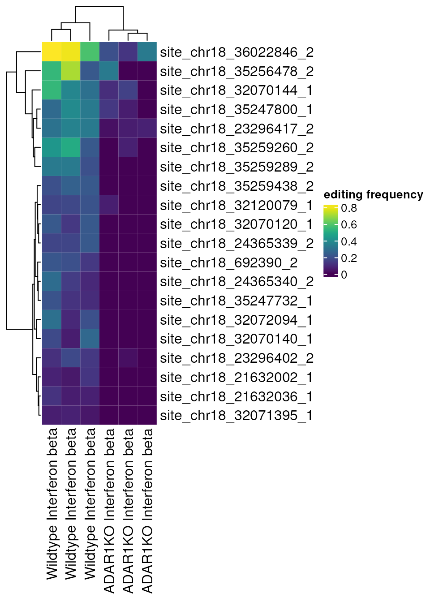
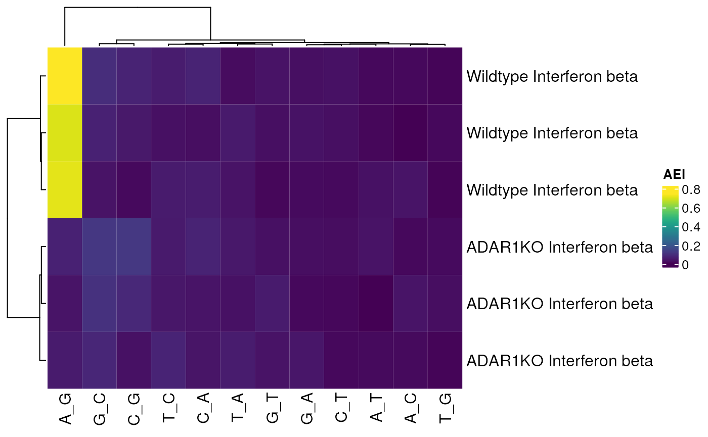

Introducing the raer package
Kent Riemondy
University of Colorado School of MedicineKristen Wells-Wrasman
University of Colorado School of Medicine2023-06-13
Source:vignettes/raer.Rmd
raer.RmdDifferential Editing tutorial
This vignette will demonstrate how to identify RNA editing sites with
condition-specific editing frequencies using the raer
package.
Set up
library(raer)
library(SummarizedExperiment)
library(DESeq2)
library(ComplexHeatmap)
library(viridis)
library(rtracklayer)In this vignette a public RNA-seq dataset will be analyzed, GSE99249, which consists of ADAR1 mutants and control human cell lines, conditionally treated with Interferon-Beta. For simplicity we will examine the ADAR1 WT and KO samples both treated with IFN-B, with triplicate samples.
Aligned BAM files and other necessary files have been preprocessed
for this vignette. These files occupy ~250 Mb of space and they are
stored in a BiocFileCache.
fns <- download_GSE99249()Next we’ll collect a vector containing the paths to each BAM file These BAM files are a subset of the full BAM files, containing only alignments from chromosome 18.
bam_files <- fns$bams
names(bam_files) <- sub("_dedup_sorted.bam", "", basename(bam_files))
bam_files[1:2]## SRR5564260
## "/github/home/.cache/R/raer/SRR5564260_dedup_sorted.bam"
## SRR5564261
## "/github/home/.cache/R/raer/SRR5564261_dedup_sorted.bam"Next we’ll need a FASTA file to quantify the editing sites. We’ll use a FASTA file only containing chromosome 18 for this demo. The fasta can be compressed.
fafn <- fns$fasta
fafn## [1] "/github/home/.cache/R/raer/6ca40f6f166_chr18.fasta.bgz"Lastly, we’ll use a BED file containing the coordinates of known human editing sites from the REDIPortal database. This file can also be optionally compressed.
sites <- import(fns$bed)
sites## GRanges object with 250442 ranges and 2 metadata columns:
## seqnames ranges strand | name score
## <Rle> <IRanges> <Rle> | <character> <numeric>
## [1] chr18 22898 + | chr18:22898:+ 0
## [2] chr18 22909 + | chr18:22909:+ 0
## [3] chr18 22932 + | chr18:22932:+ 0
## [4] chr18 22942 + | chr18:22942:+ 0
## [5] chr18 22948 + | chr18:22948:+ 0
## ... ... ... ... . ... ...
## [250438] chr18 80251604 + | chr18:80251604:+ 0
## [250439] chr18 80251607 + | chr18:80251607:+ 0
## [250440] chr18 80251609 + | chr18:80251609:+ 0
## [250441] chr18 80251634 + | chr18:80251634:+ 0
## [250442] chr18 80251647 + | chr18:80251647:+ 0
## -------
## seqinfo: 1 sequence from an unspecified genome; no seqlengthsGenerate editing site read counts
The pileup_sites() function will calculate base counts
across multiple BAM files. The base counts will be returned as a list of
GRanges objects for each bam file. The
FilterParam() function provides numerous filters to exclude
reads and bases based on commonly used filters for detecting RNA-editing
events. Specific regions can be queried using the region
argument, or specific positions can be queried by providing
bedfile a path to a BED-file.
Internally, pileup_sites() will generate pileups in
memory. However, these files can also be stored in a tabix-indexed
format, for later retrieval, or for querying specific regions.
fp <- FilterParam(
only_keep_variants = TRUE,
trim_5p = 5,
trim_3p = 5,
min_base_quality = 30L,
min_mapq = 255L,
library_type = "fr-first-strand",
min_splice_overhang = 10
)
rse <- pileup_sites(bam_files,
fafile = fafn,
sites = sites,
region = "chr18",
param = fp
)Pileups data is stored in a summarizedExperiment object,
which permits comparisons across each sample. The rowData()
and rowRanges() slots can be populated with information
related to each editing site, and similarly the colData()
slot can be used to store sample metadata. The summarizedExperiment
object can also interface with other derivative classes, such as
singleCellExperiment().
The base counts are counted in a stand specific fashion depending on
the library-type parameter. The REF and
ALT bases are in reference to the strand.
rse## class: RangedSummarizedExperiment
## dim: 6287 6
## metadata(0):
## assays(7): ALT nRef ... nC nG
## rownames(6287): site_chr18_168574_1 site_chr18_168577_1 ...
## site_chr18_80172518_2 site_chr18_80174441_2
## rowData names(4): REF rpbz vdb sor
## colnames(6): SRR5564260 SRR5564261 ... SRR5564271 SRR5564277
## colData names(1): sampleNext we will add sample metadata to the
summarizedExperiment, which will be used to conduct
differential editing analysis.
colData(rse)$genotype_treatment <- factor(rep(
c(
"ADAR1KO Interferon beta",
"Wildtype Interferon beta"
),
each = 3
))
colData(rse)$genotype <- factor(rep(
c(
"ADAR1KO",
"Wildtype"
),
each = 3
))
colData(rse)## DataFrame with 6 rows and 3 columns
## sample genotype_treatment genotype
## <character> <factor> <factor>
## SRR5564260 SRR5564260 ADAR1KO Interferon beta ADAR1KO
## SRR5564261 SRR5564261 ADAR1KO Interferon beta ADAR1KO
## SRR5564269 SRR5564269 ADAR1KO Interferon beta ADAR1KO
## SRR5564270 SRR5564270 Wildtype Interferon beta Wildtype
## SRR5564271 SRR5564271 Wildtype Interferon beta Wildtype
## SRR5564277 SRR5564277 Wildtype Interferon beta WildtypePrepare for differential editing
We next use the calc_edit_frequency function to identify
the percent of edits for each position and sample. With the
drop = TRUE argument we will also exclude sites without an
adenosine. The editing frequencies will not be used for differential
editing analysis, which will be conducted using the raw counts, however
these are useful for filtering and visualization.
se_filtered <- calc_edit_frequency(rse,
edit_from = "A",
edit_to = "G",
drop = TRUE
)We can next subset the summarizedExperiment object to
exclude low frequency editing events. For this analysis we will require
that an editing site shows editing in at least 1 sample, and have at
least 5 counts in each sample.
has_editing <- rowSums(assay(se_filtered, "edit_freq") > 0) >= 1
has_depth <- rowSums(((assay(se_filtered, "nRef") +
assay(se_filtered, "nAlt")) >= 5)) == ncol(se_filtered)
se_filtered <- se_filtered[has_editing & has_depth, ]
se_filtered## class: RangedSummarizedExperiment
## dim: 608 6
## metadata(0):
## assays(9): ALT nRef ... depth edit_freq
## rownames(608): site_chr18_204625_1 site_chr18_204626_1 ...
## site_chr18_80158602_2 site_chr18_80158603_2
## rowData names(4): REF rpbz vdb sor
## colnames(6): SRR5564260 SRR5564261 ... SRR5564271 SRR5564277
## colData names(5): sample genotype_treatment genotype n_sites
## edit_idxOnce the object has been filtered, you can prepare it for DE. This means making a new object that contains an assay with read counts if both the alt and ref alleles in a single matrix.
deobj <- make_de_object(se_filtered, min_prop = 0.05, min_samples = 3)
assay(deobj, "counts")[1:3, 1:6]## SRR5564260_ref SRR5564261_ref SRR5564269_ref
## site_chr18_692390_2 6 12 13
## site_chr18_692402_2 5 10 13
## site_chr18_21631169_1 8 10 15
## SRR5564270_ref SRR5564271_ref SRR5564277_ref
## site_chr18_692390_2 18 13 8
## site_chr18_692402_2 14 10 3
## site_chr18_21631169_1 10 3 4Run differential editing (DESeq2)
At this stage, you can use the object to perform DE yourself or use
find_de_sites() to use edgeR or
DESeq2 to identify condition specific editing events. For
differential editing, we use the design
design <- ~0 + condition:sample + condition:count and
perform testing to compare the edited read counts against unedited read
counts.
colData(deobj)## DataFrame with 12 rows and 6 columns
## sample genotype_treatment genotype n_sites
## <character> <factor> <factor> <numeric>
## SRR5564260_ref SRR5564260 ADAR1KO Interferon beta ADAR1KO 248
## SRR5564261_ref SRR5564261 ADAR1KO Interferon beta ADAR1KO 137
## SRR5564269_ref SRR5564269 ADAR1KO Interferon beta ADAR1KO 294
## SRR5564270_ref SRR5564270 Wildtype Interferon beta Wildtype 2366
## SRR5564271_ref SRR5564271 Wildtype Interferon beta Wildtype 1965
## ... ... ... ... ...
## SRR5564261_alt SRR5564261 ADAR1KO Interferon beta ADAR1KO 137
## SRR5564269_alt SRR5564269 ADAR1KO Interferon beta ADAR1KO 294
## SRR5564270_alt SRR5564270 Wildtype Interferon beta Wildtype 2366
## SRR5564271_alt SRR5564271 Wildtype Interferon beta Wildtype 1965
## SRR5564277_alt SRR5564277 Wildtype Interferon beta Wildtype 2378
## edit_idx count
## <numeric> <factor>
## SRR5564260_ref 0.00869646 ref
## SRR5564261_ref 0.00790857 ref
## SRR5564269_ref 0.00792891 ref
## SRR5564270_ref 0.05709817 ref
## SRR5564271_ref 0.06075750 ref
## ... ... ...
## SRR5564261_alt 0.00790857 alt
## SRR5564269_alt 0.00792891 alt
## SRR5564270_alt 0.05709817 alt
## SRR5564271_alt 0.06075750 alt
## SRR5564277_alt 0.05874736 alt
deobj$sample <- factor(deobj$sample)
de_results <- find_de_sites(deobj,
test = "DESeq2",
sample_col = "sample",
condition_col = "genotype",
condition_control = "Wildtype",
condition_treatment = "ADAR1KO"
)This returns a list containing the dds object, the full results, the significant results, and the model matrix.
de_results$sig_results[1:5, ]## baseMean log2FoldChange lfcSE stat
## site_chr18_32070144_1 6.750000 -2.494722 1.086252 -2.296633
## site_chr18_35247800_1 8.333333 -2.856115 1.128355 -2.531220
## site_chr18_23296417_2 14.583333 -3.058616 0.875257 -3.494535
## site_chr18_32120079_1 7.916667 -3.291919 1.454411 -2.263403
## site_chr18_21632002_1 9.250000 -3.318768 1.549462 -2.141883
## pvalue padj
## site_chr18_32070144_1 0.0216397271 0.031738266
## site_chr18_35247800_1 0.0113666451 0.021282229
## site_chr18_23296417_2 0.0004748879 0.002088297
## site_chr18_32120079_1 0.0236108504 0.034061555
## site_chr18_21632002_1 0.0322028647 0.044981779
top_sites <- rownames(de_results$sig_results)[1:20]
Heatmap(assay(se_filtered, "edit_freq")[top_sites, ],
name = "editing frequency",
col = viridis(100),
column_labels = se_filtered$genotype_treatment
)
Examine overall editing activites using the Alu Editing Index
For some studies it may be informative to assess the overall ADAR editing activity rather than examining individual editing sites. The Alu Editing Index (AEI), developed by Roth, Levanon, and Eisenberg (2019), is a metric that summarizes that amount of editing occurring at ALU elements which account for the vast majority of A-to-I editing (> 99%) in humans.
raer provides calc_AEI() to calculate the
AEI metric. Many of the same parameters used for
pileup_sites() are available in
calc_AEI().
First we will use the AnnotationHub to obtain
coordinates for ALU elements. For this example we will only examine a
subset of ALUs on chr18. Then we will use a
SNPlocs package to identify SNPs overlapping the ALU
elements from the dbSNP database, which will be excluded from the AEI
calculation. The SNPlocs coordinates are NCBI based,
whereas the ALU elements are based on hg38, we
will therefore convert between the two as needed to obtain SNP and ALU
element coordinates based on hg38.
library(AnnotationHub)
library(SNPlocs.Hsapiens.dbSNP144.GRCh38)
ah <- AnnotationHub()
rmsk_hg38 <- ah[["AH99003"]]
alus <- rmsk_hg38[rmsk_hg38$repFamily == "Alu", ]
alus <- alus[seqnames(alus) == "chr18", ]
alus <- keepStandardChromosomes(alus)
alus <- alus[1:1000, ]
seqlevelsStyle(alus) <- "NCBI"
genome(alus) <- "GRCh38.p2"
alu_snps <- get_overlapping_snps(alus, SNPlocs.Hsapiens.dbSNP144.GRCh38)
seqlevelsStyle(alu_snps) <- "UCSC"
alu_snps[1:3, ]## UnstitchedGPos object with 3 positions and 0 metadata columns:
## seqnames pos strand
## <Rle> <integer> <Rle>
## [1] chr18 21651 *
## [2] chr18 21654 *
## [3] chr18 21667 *
## -------
## seqinfo: 25 sequences (1 circular) from hg38 genome
seqlevelsStyle(alus) <- "UCSC"
alus[1:3, ]## GRanges object with 3 ranges and 11 metadata columns:
## seqnames ranges strand | swScore milliDiv milliDel
## <Rle> <IRanges> <Rle> | <integer> <numeric> <numeric>
## [1] chr18 21645-21819 + | 1319 114 0
## [2] chr18 26052-26327 + | 1539 199 7
## [3] chr18 31708-32021 + | 2192 140 0
## milliIns genoLeft repName repClass repFamily repStart
## <numeric> <integer> <character> <character> <character> <integer>
## [1] 0 -80351466 AluSq2 SINE Alu 136
## [2] 0 -80346958 AluJr SINE Alu 1
## [3] 3 -80341264 AluSp SINE Alu 1
## repEnd repLeft
## <integer> <integer>
## [1] 310 -3
## [2] 278 -34
## [3] 313 0
## -------
## seqinfo: 25 sequences (1 circular) from hg38 genomecalc_AEI() will return a matrix containing the AEI
calculated for all allelic combinations and a more detailed table
containing values for each chromosome.
alu_index <- calc_AEI(bam_fn = bam_files,
fasta_fn = fafn,
snp_db = alu_snps,
alu_ranges = alus,
param = fp)
names(alu_index)## [1] "AEI" "AEI_per_chrom"The AEI in wild-type samples is highest for A-to-G, as
expected, and sharply reduced in the ADAR1KO samples.
Heatmap(alu_index$AEI,
name = "AEI",
col = viridis(100),
row_labels = rse$genotype_treatment[match(rownames(alu_index$AEI),
rse$sample)]
)
Session info
## R version 4.3.0 (2023-04-21)
## Platform: x86_64-pc-linux-gnu (64-bit)
## Running under: Ubuntu 22.04.2 LTS
##
## Matrix products: default
## BLAS: /usr/lib/x86_64-linux-gnu/openblas-pthread/libblas.so.3
## LAPACK: /usr/lib/x86_64-linux-gnu/openblas-pthread/libopenblasp-r0.3.20.so; LAPACK version 3.10.0
##
## locale:
## [1] LC_CTYPE=en_US.UTF-8 LC_NUMERIC=C
## [3] LC_TIME=en_US.UTF-8 LC_COLLATE=en_US.UTF-8
## [5] LC_MONETARY=en_US.UTF-8 LC_MESSAGES=en_US.UTF-8
## [7] LC_PAPER=en_US.UTF-8 LC_NAME=C
## [9] LC_ADDRESS=C LC_TELEPHONE=C
## [11] LC_MEASUREMENT=en_US.UTF-8 LC_IDENTIFICATION=C
##
## time zone: UTC
## tzcode source: system (glibc)
##
## attached base packages:
## [1] grid stats4 stats graphics grDevices utils datasets
## [8] methods base
##
## other attached packages:
## [1] SNPlocs.Hsapiens.dbSNP144.GRCh38_0.99.20
## [2] BSgenome_1.68.0
## [3] Biostrings_2.68.1
## [4] XVector_0.40.0
## [5] AnnotationHub_3.8.0
## [6] BiocFileCache_2.8.0
## [7] dbplyr_2.3.2
## [8] rtracklayer_1.60.0
## [9] viridis_0.6.3
## [10] viridisLite_0.4.2
## [11] ComplexHeatmap_2.16.0
## [12] DESeq2_1.40.1
## [13] SummarizedExperiment_1.30.2
## [14] Biobase_2.60.0
## [15] GenomicRanges_1.52.0
## [16] GenomeInfoDb_1.36.0
## [17] IRanges_2.34.0
## [18] S4Vectors_0.38.1
## [19] BiocGenerics_0.46.0
## [20] MatrixGenerics_1.12.2
## [21] matrixStats_1.0.0
## [22] raer_0.99.2
## [23] BiocStyle_2.28.0
##
## loaded via a namespace (and not attached):
## [1] RColorBrewer_1.1-3 jsonlite_1.8.5
## [3] shape_1.4.6 magrittr_2.0.3
## [5] GenomicFeatures_1.52.0 rmarkdown_2.22
## [7] GlobalOptions_0.1.2 fs_1.6.2
## [9] BiocIO_1.10.0 zlibbioc_1.46.0
## [11] ragg_1.2.5 vctrs_0.6.2
## [13] memoise_2.0.1 Cairo_1.6-0
## [15] Rsamtools_2.16.0 RCurl_1.98-1.12
## [17] htmltools_0.5.5 S4Arrays_1.0.4
## [19] progress_1.2.2 curl_5.0.1
## [21] sass_0.4.6 bslib_0.5.0
## [23] desc_1.4.2 cachem_1.0.8
## [25] GenomicAlignments_1.36.0 mime_0.12
## [27] lifecycle_1.0.3 iterators_1.0.14
## [29] pkgconfig_2.0.3 Matrix_1.5-4.1
## [31] R6_2.5.1 fastmap_1.1.1
## [33] shiny_1.7.4 GenomeInfoDbData_1.2.10
## [35] clue_0.3-64 digest_0.6.31
## [37] colorspace_2.1-0 AnnotationDbi_1.62.1
## [39] rprojroot_2.0.3 textshaping_0.3.6
## [41] RSQLite_2.3.1 filelock_1.0.2
## [43] fansi_1.0.4 httr_1.4.6
## [45] compiler_4.3.0 bit64_4.0.5
## [47] withr_2.5.0 doParallel_1.0.17
## [49] BiocParallel_1.34.2 DBI_1.1.3
## [51] highr_0.10 R.utils_2.12.2
## [53] biomaRt_2.56.1 rappdirs_0.3.3
## [55] DelayedArray_0.26.3 rjson_0.2.21
## [57] tools_4.3.0 interactiveDisplayBase_1.38.0
## [59] httpuv_1.6.11 R.oo_1.25.0
## [61] glue_1.6.2 restfulr_0.0.15
## [63] promises_1.2.0.1 cluster_2.1.4
## [65] generics_0.1.3 gtable_0.3.3
## [67] R.methodsS3_1.8.2 data.table_1.14.8
## [69] hms_1.1.3 xml2_1.3.4
## [71] utf8_1.2.3 BiocVersion_3.17.1
## [73] foreach_1.5.2 pillar_1.9.0
## [75] stringr_1.5.0 later_1.3.1
## [77] circlize_0.4.15 dplyr_1.1.2
## [79] lattice_0.21-8 bit_4.0.5
## [81] tidyselect_1.2.0 SingleCellExperiment_1.22.0
## [83] locfit_1.5-9.8 knitr_1.43
## [85] gridExtra_2.3 bookdown_0.34
## [87] xfun_0.39 stringi_1.7.12
## [89] yaml_2.3.7 evaluate_0.21
## [91] codetools_0.2-19 tibble_3.2.1
## [93] BiocManager_1.30.21 cli_3.6.1
## [95] xtable_1.8-4 systemfonts_1.0.4
## [97] munsell_0.5.0 jquerylib_0.1.4
## [99] Rcpp_1.0.10 png_0.1-8
## [101] XML_3.99-0.14 parallel_4.3.0
## [103] ellipsis_0.3.2 pkgdown_2.0.7
## [105] ggplot2_3.4.2 blob_1.2.4
## [107] prettyunits_1.1.1 bitops_1.0-7
## [109] scales_1.2.1 purrr_1.0.1
## [111] crayon_1.5.2 GetoptLong_1.0.5
## [113] rlang_1.1.1 KEGGREST_1.40.0